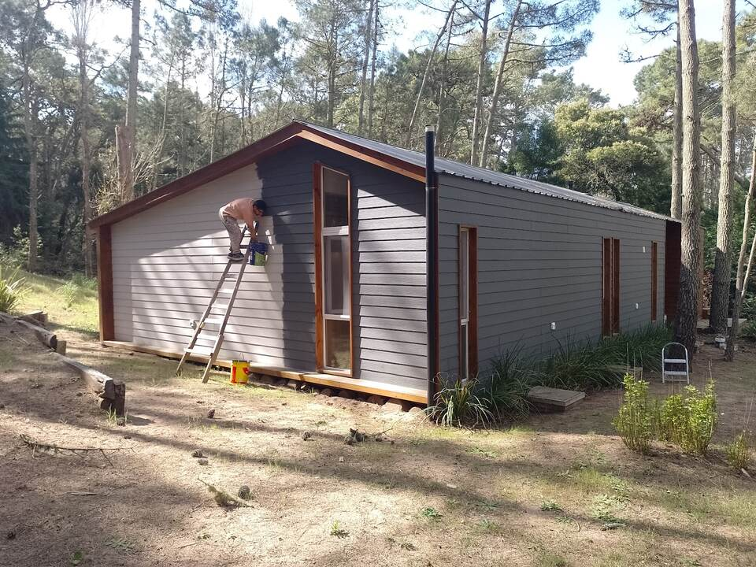
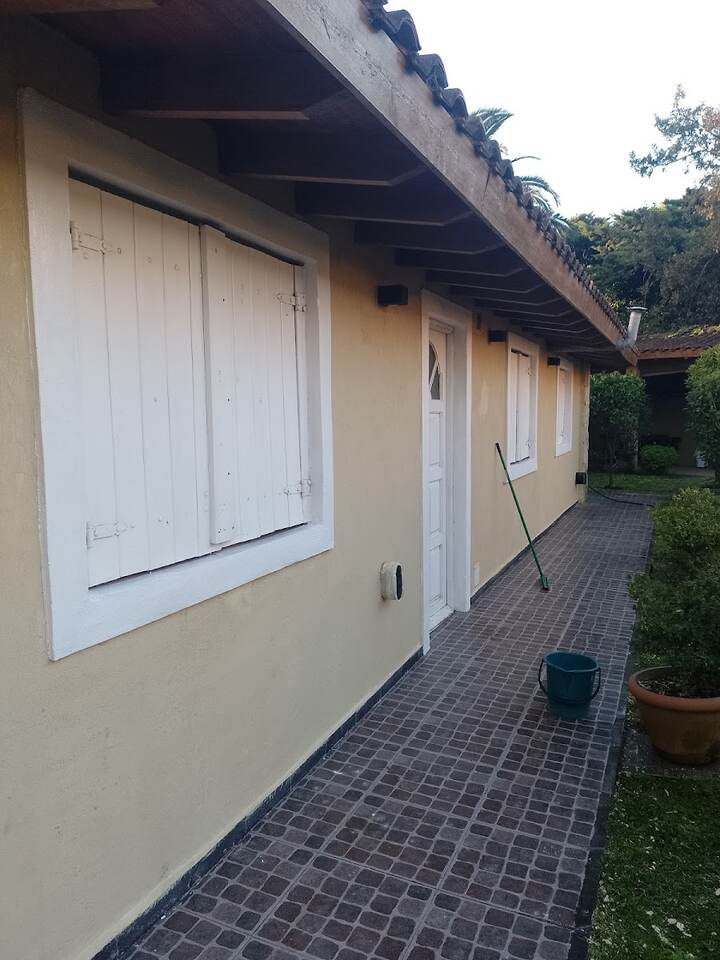
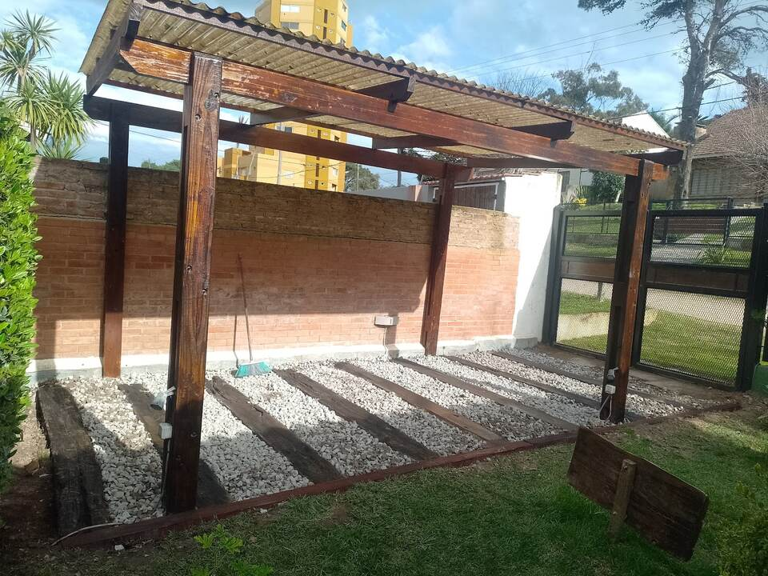
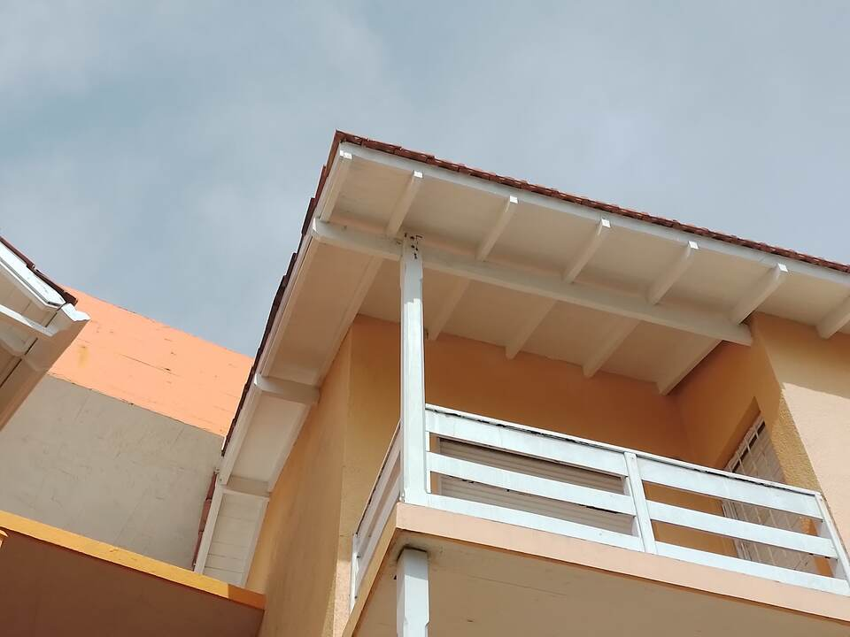

Atención directa
Tu proyecto, en una conversación clara.
Describí el espacio, indicá la localidad y compartí imágenes si ayudan a explicar mejor lo que buscás.
Consultar por WhatsApp
Villa Gesell y la Costa Atlántica
Trabajos en Mar Azul, Mar de las Pampas, Villa Gesell, Cariló y Pinamar.
WhatsApp directo+54 9 2255 41-7763Néstor Benítez
Un mensaje con la localidad y una breve descripción del trabajo ayuda a iniciar la consulta. Si tenés fotos del espacio, también podés compartirlas por WhatsApp.
Servicios
El alcance se conversa según cada proyecto. Escribile a Néstor para contarle qué trabajo necesitás y coordinar la consulta.
Atención directa
Describí el espacio, indicá la localidad y compartí imágenes si ayudan a explicar mejor lo que buscás.
Consultar por WhatsAppGalería




Zonas de trabajo
Consultas
Pintura y mantenimiento general. Escribile a Néstor para contarle los detalles de tu proyecto.
Mar Azul, Mar de las Pampas, Villa Gesell, Cariló y Pinamar.
Una descripción breve, la localidad y, si querés, fotos del espacio. Podés mandarlo directamente por WhatsApp.
Contacto directo
Escribile por WhatsApp con el trabajo que necesitás y la localidad.